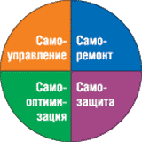
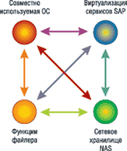

Олег Спиряев
Задача контроля над расходами на ИТ не только не теряет своей актуальности, но, наоборот, становится все более острой. При этом основные предложения поставщиков по-прежнему не укладываются в рамки бюджетов компаний. Кроме того, по оценкам аналитиков, на каждый доллар, вложенный сегодня в информационные системы (ИС), через пять лет придется потратить еще десять на оплату обслуживающего персонала. Как считают некоторые эксперты, темпы внедрения новых технологий и растущая нехватка квалифицированных администраторов приведут к тому, что через несколько лет часть компаний просто не сможет управлять своими ИС.
Компании пытаются разрешить описанные проблемы разными способами, но идеологии их подходов во многом совпадают. Так, большинство ведущих производителей серверов развивают концепции, реализация которых позволила бы упростить управление ИТ-инфраструктурой, сделать его дешевле, обеспечить возможности расширения, быстрого развертывания систем и удаленного управления. С этой целью они предлагают заказчикам новые привлекательные концепции виртуализации, открытой, прозрачной или адаптивной вычислительной инфраструктуры, самоуправляемых систем.
IBM e-Business on Demand
Не секрет, что большинство технологий, направленных на обеспечение непрерывного функционирования сервера, заимствовано из мира мэйнфреймов. Неудивительно поэтому, что одну из ведущих ролей в подобных разработках играет именно корпорация IBM (http://www.ibm.com). В ее представлении создание открытой, виртуализованной и способной к самоуправлению вычислительной инфраструктуры позволит предприятиям привести свои информационные ресурсы в соответствие с требованиями бизнеса в условиях растущей сложности систем и увеличения сроков их внедрения.
IBM одной из первых стала работать над концепцией «автономных вычислений». Ее проект eLiza, ориентированный на системы серии eServer, был нацелен на снижение стоимости эксплуатации и администрирования ИС нового поколения за счет самооптимизации, самоконфигурирования, самовосстановления и самозащиты (рис. 1). Целью этого проекта, к реализации которого IBM приступила еще в 2001 г., было заставить серверы и мэйнфреймы реагировать на различные ситуации и системные проблемы без вмешательства человека. Планировалось реализовать функции самоуправления для аппаратного обеспечения, микропрограммного кода и операционных систем, а затем распространить их на системы хранения данных и ПО промежуточного слоя. В подобных автономных вычислениях предполагалось использовать обучающиеся алгоритмы для перераспределения ресурсов в случае возникновения проблем.
|  | Рис. 1. Составляющие автономных вычислений.
|
Позже проект eLiza стал частью инициативы e-Business on Demand, рассчитанной на мэйнфреймы и серверы семейства eServer. Так, в середине 2004 г. IBM представила новые серверы eServer p5, кардинально меняющие ситуацию в сегменте Unix-систем. Эти новейшие серверы для платформ Unix и Linux, построенные на базе процессоров POWER 5 и технологии Micro-Partitioning (входящей в комплекс технологий IBM Virtualization Engine), обеспечивают высокую вычислительную производительность и снижение затрат для широкого спектра деловых и научных приложений, включая новые классы приложений реального времени. Системы eServer p5 — результат трехлетних широкомасштабных исследований и разработок корпорации, целью которых было распространить на традиционные Unix-серверы возможности мира мэйнфреймов, позволяющие компаниям более эффективно использовать вычислительные ресурсы, повысить производительность, улучшить гибкость и снизить затраты на управление ИТ-системами.
Новые системы IBM eServer p5 насчитывают от 2 до 16 микропроцессоров POWER 5; в будущем планируется выпустить значительно более мощные системы, которые, благодаря стандартной архитектуре POWER, превзойдут по производительности и масштабируемости все существующие Unix-платформы.
Напомним, что в основных серверных платформах корпорации реализована поддержка динамических логических разделов (Dynamic LPAR), относимых IBM к средствам самооптимизации. Благодаря этому один мощный сервер способен выступать в качестве нескольких виртуальных машин с разными операционными средами и разными вычислительными ресурсами, включая процессоры, системную память, устройства ввода-вывода. Администратор может динамически перенастраивать разделы, выделяя ресурсы наиболее требовательным приложениям. Серверы eServer p5 стали первыми Unix-системами, позволяющими создавать на одном микропроцессоре до десяти независимо работающих виртуальных серверов (микроразделов). За счет этого компании-заказчики могут улучшить загрузку процессоров и менее чем за секунду автоматически перенастроить процессорные разделы в соответствии с меняющимися потребностями бизнеса. Системы IBM eServer p5 предоставляют хорошие возможности для консолидации серверов и поддержки смешанных нагрузок в одной системе, позволяя задействовать одновременно несколько операционных сред.
Вычислительные ресурсы по требованиюТехнология вычислений «по требованию» открывает новые возможности для компаний, периодически нуждающихся в суперкомпьютерной вычислительной мощности, но не желающих покупать и эксплуатировать собственный суперкомпьютер, рассчитанный на максимальные или пиковые вычислительные нагрузки. Сейчас клиент может выбирать: приобрести суперкомпьютерный кластер или использовать доступ по требованию к такой же системе, заплатив при этом за процессорную мощность из расчета требуемых ресурсов и фактической продолжительности использования. Например, компания Landmark Graphics, дочернее подразделение корпорации Halliburton, объявила о достижении договоренности с корпорацией IBM о предоставлении доступа «по требованию» к вычислительным ресурсам для обработки сейсмической информации. Landmark присоединится к глобальной сети компьютерных центров IBM под названием Deep Computing Capacity On Demand, обеспечив тем самым своим клиентам, занимающимся обработкой сейсмической информации, масштабируемый доступ к информационному хранилищу и вычислительным ресурсам. По мнению Landmark, это предложение идеально соответствует потребностям многих клиентов компании, поскольку предоставляет вычислительные ресурсы по мере необходимости, позволяя избежать крупных авансовых вложений средств. Новая модель подписки дает пользователям программных средств Landmark возможность обрабатывать увеличенные объемы сейсмических данных и быстрее завершать свои проекты. Эта услуга особенно привлекательна для построения изображений по исходным сейсмограммам с использованием ProMAX, SeisSpace и других подобных технологий. Наличие избыточной вычислительной мощности, рассчитанной на пиковые режимы, снижает для пользователей инвестиции в аппаратные средства. Кроме того, возможность безопасного удаленного доступа также повышает привлекательность модели вычислений «по требованию» для совместной обработки и интерпретации сейсмических данных. С помощью технологии IBM On Demand компания Landmark расширяет свой ассортимент управляемых ИТ-услуг за счет уникальной услуги — обработки сейсмической информации. Предоставляя своим клиентам высокую вычислительную производительность, Landmark позволяет им быстрее завершить обработку сейсмических данных. Вне зависимости от того, будет ли компания Landmark выполнять все задачи компьютерной обработки или только часть из них, модель вычислений по требованию будет использована для получения необходимого объема вычислительных ресурсов, а также для гарантированного сокращения времени вычислений и обеспечения высокого качества предоставляемой услуги. |
Новое приложение IBM WebSphere Extended Deployment предназначено для автоматической оптимизации производительности программного и аппаратного обеспечения компаний в случае изменения потребностей, например, при неожиданном резком увеличении рабочих нагрузок или в новых условиях на рынке. Оно ориентировано на компании, вычислительные ресурсы которых должны эффективно и надежно обрабатывать непредсказуемые заранее объемы информации, например, о биржевых торгах. Предприятиям розничной торговли также необходима возможность справляться с произвольными скачками спроса, скажем, в периоды распродаж.
Приложение IBM WebSphere Extended Deployment, работающее на базе прикладной платформы IBM WebSphere Application Server, обеспечивает более эффективное использование и распределение рабочих нагрузок между многочисленными приложениями и серверами приложений, обрабатывающими ежедневно гигантские объемы пользовательских транзакций. WebSphere Extended Deployment позволяет динамически настраивать ИТ-ресурсы в соответствии с потребностями ключевых бизнес-приложений. Благодаря этому предприятия могут не только успешно справиться с ростом нагрузок, но и значительно увеличить производительность работы сети и скорость обработки транзакций.
WebSphere Extended Deployment обеспечивает более эффективное использование вычислительной инфраструктуры, причем делает это быстрее и точнее человека. Работая в паре с IBM Tivoli Intelligent Orchestrator, новое приложение ведет мониторинг эффективности работы сети, непрерывно осуществляя балансировку и передавая часть неожиданно возросших нагрузок недостаточно используемым аппаратным средствам или приложениям. Сетевые администраторы имеют возможность явным образом утверждать или отклонять предложенные варианты оптимизации, прежде чем они вступят в силу.
Приложение также позволяет эффективно распределить выполнение больших заданий между несколькими процессорами, базами данных, прикладными модулями и серверами приложений. Например, Extended Deployment может выделить конкретные серверы приложений для выполнения конкретных заданий, снижая тем самым вероятность возникновения проблем и увеличивая скорость и эффективность выполнения задач. Так как новый модуль поддерживает практически постоянную работоспособность системы в целом, отдельные приложения получают время для восстановления после изолированных сбоев.
Существенная особенность приложения — возможность назначить задачам приоритеты на основании их важности для бизнеса; таким образом, более важная транзакция будет обработана быстрее, чем транзакция с менее жесткими требованиями к скорости обработки или оказывающая меньшее влияние на результаты деятельности предприятия. Приложение оснащено специальной панелью, которая информирует администраторов о текущей производительности системы и предоставляет интуитивно понятные средства, упрощающие и совершенствующие управление сложными системными конфигурациями.
В конце лета IBM представила новое ПО, позволяющее компаниям более эффективно планировать свои бизнес-операции. WebSphere Business Integration Modeler дает возможность визуализировать, проектировать и планировать различные операции, что позволяет оценить эффективность процессов и изменить их в случае замедления работы или выявления каких-либо ошибок. Этот инструмент моделирования соответствует открытым стандартам и основан на Eclipse — универсальной платформе разработки ПО с открытым кодом. Именно поэтому он легко интегрируется в существующую ИТ-архитектуру клиента. Новое ПО соответствует BPEL (Business Process Execution Language) — открытому XML-стандарту для описания набора Web-сервисов, предназначенных для реализации какого-либо бизнес-процесса, и поддерживает WebSphere Business Integration Server Foundation, ПО для обработки очередей сообщений WebSphere MQ и инструменты разработки Rational Rose XDE. Открытая архитектура позволяет клиентам работать с существующим контентом, в том числе и основанном на стандарте XML, создавать контент с использованием таких инструментов, как Microsoft Visio, и расширять его с помощью средств имитации и моделирования, предоставляемых продуктом WebSphere Business Integration Modeler.
Адаптивная инфраструктура HP
Адаптивная архитектура ИТ, предлагаемая корпорацией HP (http://www.hp.com), представляет собой комплекс решений, систему взглядов и концепций, направленных на построение ИТ-инфраструктуры компании, которая будет обеспечивать синхронизацию развития бизнеса и ИТ в процессе изменений.
Адаптивная инфраструктура HP позволяет создать на предприятии прочную технологическую основу, которая способна масштабироваться до размеров конкретной среды и развиваться вместе с предприятием, гибко и управляемо развертывая и перераспределяя уже имеющиеся и новые технологические ресурсы. Используя ставшие отраслевыми стандартами промышленные технологии, применяющиеся в серверах, системах хранения данных и ПО, адаптивная инфраструктура HP основывается на единых стандартах, что сокращает затраты, защищает инвестиции и расширяет возможности гетерогенных сред в масштабе всего предприятия. Более того, в эту инфраструктуру могут входить услуги и решения, помогающие немедленно запустить в эксплуатацию новые системы.
Принципы адаптивной инфраструктуры HPВ основе HP Adaptive Enterprise лежат четыре ключевых принципа: обеспечение непрерывности бизнеса, эффективное управление компонентами ИТ-системы, гибкое распределение ресурсов и готовность к внедрению будущих технологий. Обеспечение высокой доступности — это комплексная задача. Для ее решения необходимо отслеживать весь процесс, начиная от изготовления систем на заводе производителя до построения и управления системой. Адаптивная инфраструктура предполагает так называемый проактивный подход к обеспечению высокой доступности. В случае возникновения предкритических ситуаций система высвобождает потенциально сбойные компоненты и передает задачи, которые на них выполнялись, другим, работоспособным компонентам системы. В результате бизнес-пользователи не заметят изменений в работе своих приложений, а технические сотрудники смогут провести ремонт и замену компонентов без остановки системы и бизнес-приложений. Особое внимание HP уделяет архитектуре систем, обеспечивающих высокую доступность решений. В такой архитектуре в случае сбоя, не устранимого средствами нижнего уровня обеспечения надежности, система быстро переключается на резервный комплекс и ее работоспособность восстанавливается. В основе таких решений лежит методология кластерных решений, хорошо зарекомендовавшая себя во многих компаниях. Таким образом, в адаптивной инфраструктуре непрерывная работа всей ИТ-инфраструктуры организуется благодаря следующим средствам (рис. 2):
Адаптивная инфраструктура HP обеспечивает виртуализацию и автоматическое управление всей совокупностью распределенных в ИС инфраструктурных ресурсов — серверов и систем хранения данных, а также автоматическое развертывание систем. При этом реакция на изменения не только проактивна, она также позволяет эффективно и быстро использовать изменения для получения конкурентного преимущества. Возможность динамического распределения ресурсов позволяет гарантированно предоставлять информационные ресурсы в заданное время, в заданном объеме и с заданной производительностью при полном контроле со стороны менеджеров системы. Такая гибкость необходима современному предприятию, так как бизнес-задачи потребляют информационные ресурсы неравномерно. Гибкое управление позволяет, с одной стороны, уменьшить затраты на информационную инфраструктуру за счет эффективного маневрирования имеющимися ресурсами, с другой стороны — обеспечивает производительность тем бизнес-процессам, в которых компания в наибольшей степени нуждается в данный момент. Адаптивная инфраструктура помогает компании оптимизировать использование основных ИТ-средств, в том числе и на будущее, устраняя традиционные ограничения вычислительных систем. Заказчикам HP предоставляются специальные решения для визуализации, позволяющие создавать максимально оптимизированные пулы ресурсов для всей инфраструктуры, а также средства упрощенного автоматического выделения ресурсов, обеспечивающие гибкое развертывание системы предоставления услуг. Инвестиции компаний в компьютерную инфраструктуру и серверное оборудование рассчитаны на длительный срок и должны быть надежно защищены. Основными причинами обесценивания инвестиций в ИТ-инфраструктуру, помимо амортизации, считают появление новых компьютерных технологий и возникновение новых бизнес-процессов, требующих автоматизации. Подход компании HP предполагает, что такие изменения неизбежны, и задача компании заключается в том, чтобы максимально использовать уже сделанные инвестиции в быстро меняющихся условиях. Важный аспект, придающий заказчикам уверенность в защите инвестиций в серверные технологии, — построение решений на основе индустриальных стандартов. Этот подход соответствует основным принципам компании HP: использование индустриальных стандартов интерфейсов, платформ и ПО, внедрение стандартных процедур и политик для управления изменениями и использование стандартной архитектуры. |
Центральный элемент предлагаемых компанией HP решений для управления инфраструктурными службами (Infrastructure Services Management Solutions) — программный продукт HP OpenView Route Analytics Management System, меняющий принципы управления опорными сетями. В отличие от обычных программных средств сетевого мониторинга, решение Route Analytics Management System управляет сетью со скоростью передачи данных в этой сети. Собирая данные и постоянно обеспечивая заказчикам представление о функционировании системы, это решение позволяет визуализировать работу системы почти в реальном времени, что ускоряет выявление и устранение неполадок. Решение HP OpenView Route Analytics Management System управляет сетью как службой, а не как информационной инфраструктурой. В нынешних системах к тому времени, как получено сообщение о неполадке и предприняты соответствующие действия, проблема обычно успевает оказать негативное влияние на тот или иной бизнес-процесс, так что устранять ее уже поздно. Решение HP OpenView Route Analytics Management System позволяет заказчикам не только локализовать неполадки в сети в реальном масштабе времени, но и оценивать влияние возникающих проблем на работу предприятия.
HP OpenView Service Desk — базовый программный продукт для реализации стратегии HP IT Service Management, основанной на передовых практиках ИТ-индустрии и стандартах библиотеки ITIL. С помощью этого решения предприятия и поставщики услуг могут эффективно контролировать качество услуг с точки зрения клиента, получая возможность управлять важнейшими процессами их предоставления и технической поддержки для решения сложных задач, связанных с работой ИТ-инфраструктуры. Как показывают основные выводы IDC, касающиеся HP OpenView Service Desk, это решение позволило заказчикам поэтапно снизить ежемесячные затраты рабочего времени ИТ-специалистов. Внедрение HP OpenView Service Desk обеспечило показатель возврата на инвестиции (ROI) в ИТ, равный 157%, а также их окупаемость в течение 12,1 месяца. Кроме того, заказчики, внедрившие решение HP OpenView Service Desk в сочетании с решением для управления процессами HP OpenView Operations, вышли на еще более высокий уровень производительности и отдачи от инвестиций.
HP OpenView Business Process Insight — это основной продукт семейства программных решений Business Management Solution. Это ПО, отвечающее за непосредственную связь между ИС и производственно-коммерческими задачами предприятия, способно наглядно продемонстрировать свою ценность для бизнеса, давая возможность измерить показатели своей работы. Предприятия, пользующиеся программными решениями компании HP, могут оптимизировать работу своих структур, занимающихся обслуживанием заказчиков. Кроме того, им будет легче добиться результатов, для достижения которых был создан тот или иной бизнес-процесс. В результате ИС, управление которыми осуществляется на основе данных и приоритетов, связанных с влиянием тех или иных факторов на функционирование производственно-коммерческих подразделений, становятся способны более качественно поддержать предоставление информационных услуг, регулирующихся соглашениями об уровне оказываемых услуг. Роль продукта HP OpenView Business Process Insight в адаптивной корпоративной ИС будет заключаться в формировании запросов на внесение изменений в ресурсы ИС, что поможет создать бизнес-процессы, способные самостоятельно оптимизировать свою работу.
Адаптивные системы от Fujitsu Siemens
Собственную стратегию адаптивных систем корпорация Fujitsu Siemens Computers (http://www.fujitsu-siemens.com) представила в 2003 г. Эта стратегия состояла в разработке серверных платформ, в которых стоимость эксплуатации снижается за счет усовершенствованных средств самоуправления, а эффективность администрирования серверов удается повысить благодаря автономным вычислениям. В функциональном плане концепция включала четыре основные группы задач самоуправления: cамоконфигурирование, самооптимизация, самолечение, самозащита.
Базовые серверы Fujitsu SiemensОсновой стратегии адаптивных систем Fujitsu Siemens служат все серверные решения корпорации, включая серверы платформы Intel (Primergy), SPARC-платформы (PrimePower) под управлением ОС Solaris, мэйнфреймы (BS2000), а также системы хранения. Серверы Primergy RXI300 поставляются как с двумя процессорами Itanium 2 (1,4 ГГц и 1,6 ГГц) и кэш-памятью 3-го уровня объемом 3 Мбайт, так и в версии с процессором с тактовой частотой 1,5 ГГц и кэш-памятью 3-го уровня объемом 6 Мбайт. Эти компьютеры предназначаются главным образом для работы приложений, требующих очень высокой производительности, например, для решения научных и технических задач. С ее помощью пользователи могут одновременно запускать приложения, выполняющие большой объем вычислений, проводить качественный анализ и обработку изображений с высоким разрешением. Производительность системы также способствует более эффективной и быстрой работе коммерческих приложений. Встроенный дисковый массив RAID 1 позволяет дублировать важную информацию, что повышает степень ее безопасности и доступности, а возможности сервера расширяются за счет трех разъемов PCI-X и двух портов Gigabit Ethernet. Благодаря небольшим размерам сервер хорошо подходит для установки в информационном центре: одна система занимает в высоту всего лишь 2U, так что в стойку высотой 46 единиц можно установить 23 таких системы. Новые серверы PrimePower создаются на основе пятого поколения 64-разрядных процессоров SPARC64 V, работающих на частоте 1,89 ГГц. Это первые процессоры для серверов Unix, изготовленные по полупроводниковой технологии 90 нм, что дает значительный прирост в скорости — в среднем на 35%. Помимо возросшей тактовой частоты и новой технологии, в эти процессоры установлена кэш-память 2-го уровня объемом 3 Мбайт. Модели собраны на новых системных платах, которые поддерживают память удвоенного объема (до 64 Гбайт на каждой). Все эти особенности — частота, кэш-память и увеличение ОЗУ — обеспечивают максимальные производительность и время безотказной работы серверов PrimePower. В процессоры SPARC64 V также были встроены механизмы повышенной надежности, в том числе высокоточная диагностика ошибок, проверка и коррекция ошибок ECC, и функции повтора инструкций, включая коррекцию ошибок и другие прецизионные функции, обеспечивающие высокую надежность, готовность и обслуживаемость (RAS). Новые серверы PrimePower моделей 650, 850, 900, 1500 и 2500 унаследовали высокую надежность и расширяемость прошлых моделей, резко прибавив при этом в скорости. По результатам теста SPECjbb2000 (Standard Performance Evaluation Corporation Java Business Benchmark 2000) серверы PrimePower 1500 с 32 процессорами 1,89 ГГц SPARC64 V установили рекорд производительности при выполнении бизнес-приложений на основе Java в классе 32-процессорных устройств, выполнив 663,133 инструкции в секунду. Серверы PrimePower — центральная серия продуктов в рамках стратегии оптимизации TRIOLE. Как известно, «изюминка» новой стратегии TRIOLE, созданной группой компаний Fujitsu, Fujitsu Computer Systems, Fujitsu Services и Fujitsu Siemens Computers, — значительное снижение совокупной стоимости владения (TCO) ИТ-инфраструктурой. TRIOLE базируется на трех основных технологических решениях: виртуализация, автоматизация и интеграция. Ее цель — помогать корпоративным и общественным институтам расширять сферу своей деятельности, быстро адаптироваться к новым процессам, улучшать стабильность работы. |
Сегодня Fujitsu Siemens предлагает готовое решение FlexFrame for mySAP Business Suite, в котором реализуется концепция адаптивных систем на всех уровнях — от аппаратуры до прикладного ПО. Основные преимущества FlexFrame состоят в значительном снижении общей стоимости владения ИТ-инфраструктурой и в повышении ее гибкости. Общая стоимость владения снижается по нескольким причинам. Одна из них — снижение стоимости администрирования системы. Дело в том, что автономное ее функционирование практически не требует вмешательства оператора. Другая причина заключается в гораздо более эффективном использовании ресурсов.
В системе FlexFrame (рис. 3) реализован механизм виртуализации ресурсов. Это, в частности, означает, что каждый ресурс имеет виртуальное имя, виртуальное имя хоста и виртуальный IP-адрес. Поэтому ПО, функционирующее в ИС, «предполагает», что имеет неограниченный доступ к любым ресурсам. На стадии же выполнения конкретной задачи FlexFrame ставит в соответствие виртуальным ресурсам реальные физические ресурсы, причем выделяет их лишь на время использования и после этого опять освобождает.
|  | Рис. 3. Основные особенности FlexFrame.
|
Стоит отметить, что гибкость системы, созданной на основе FlexFrame, такова, что в нее можно добавлять новые ресурсы (например, серверы) без остановки и перезагрузки. Благодаря виртуализации всех ресурсов система автоматически распознает новый ресурс и при необходимости подключает к работе. Кстати, такое решение не только снижает стоимость администрирования системы (при любом изменении настроек они автоматически распространяются на все серверы), но и повышает уровень ее безопасности за счет использования одной версии ОС, автоматически устанавливаемой на вновь подключаемый сервер. Иными словами, на базе единственной версии ОС создается множество ее копий — столько, сколько необходимо для поддержки всех виртуальных процессов.
В рамках инициативы, которая получила название «Адаптивная инфраструктура для организации вычислений» (Adaptive Computing Infrastructure), корпорация SAP (http://www.sap.com) реализует свои задачи с помощью FlexFrame. Fujitsu Siemens стала первым партнером по глобальному развитию технологии SAP (SAP Global Technology Partner), прошедшим «Тест на совместимость с адаптивной вычислительной инфраструктурой SAP» (SAP Adaptive Computing Compliance Test), доказав тем самым, что функциональные возможности ИТ-инфраструктуры Fujitsu Siemens находятся в соответствии с возможностями адаптивной вычислительной инфраструктуры (Adaptive Computing) компании SAP, а также с процедурами, определенными Советом по адаптивной вычислительной инфраструктуре (Adaptive Computing Council) SAP.
N1 от Sun Microsystems
Впервые корпорация Sun Microsystems (http://www.sun.com) заявила о своей стратегии N1 осенью 2002 г. Эта стратегия рисовала привлекательную картину построения и эксплуатации вычислительных центров на основе технологий виртуализации ресурсов, управления системными и прикладными сервисами и автоматизации самого процесса управления путем применения политик. Спустя год сформировалась вполне реальная стратегия и тактика внедрения, подкрепленная набором конкретных продуктов. Вообще говоря, стратегия развития N1 предполагает три этапа:
- управление инфраструктурой;
- управление прикладными сервисами;
- автоматизация управления.
Управление инфраструктурой основывается на концепции виртуализации системных ресурсов и создания «пулов» ресурсов. Известно, что массу времени у администраторов отнимают рутинные процедуры подключения, перекоммутации, конфигурирования, запуска оборудования и системных сервисов. Каждый администратор стремится минимизировать эти действия путем автоматизации, стандартизации, унификации платформ, но не всегда это удается. Разработчики N1 поставили перед собой задачу сделать так, чтобы все оборудование физически устанавливалось и подключалось лишь однажды, а все дальнейшие операции изменения архитектуры, перекоммутации и переконфигурирования выполнялись программно.
Система с виртуализованными ресурсами готова к тому, чтобы разместить на ней прикладные сервисы, — современные архитектуры прикладных систем имеют достаточно выраженную модульную, многоуровневую структуру. На следующем этапе администратор задает политики и правила автоматизированного управления прикладными сервисами. Одна из задач — перераспределение ресурсов в соответствии с требованиями приложений. Например, если сервер баз данных не справляется с возросшей нагрузкой, то система перемещает его на более мощный сервер или расширяет домен, на котором работает СУБД, добавляя к нему системные платы. Еще одна, не менее важная, задача — автоматическое поддержание требуемого уровня готовности прикладных сервисов. Вся система, построенная на технологиях N1, пронизана кластерными связями, обеспечивающими резервирование ресурсов и процедуры запуска приложений в случае сбоя. В идеале каждое приложение выполняется в кластерной конфигурации с несколькими узлами, которая гарантирует непрерывность функционирования при любых условиях.
Летом 2004 г. на ежеквартальной конференции Network Computer корпорация Sun Microsystems представила ряд инновационных технологий и решений N1 Grid, которые позволяют быстрее развертывать решения для распределенных вычислений и эффективнее управлять сетевыми ресурсами. В число новшеств вошли усовершенствованные решения N1 Grid Engine 6, N1 Grid Console, N1 Grid Tool Kit, N1 Grid для решений SAP, N1 Grid Blueprint и готовые решения для распределенных вычислений, дополняющие возможности системы Sun Fire V20z Compute Grid Rack System.
Система Sun Fire V20z Compute Grid Rack System повышает показатель эффективности использования вычислительных ресурсов до 90%, время ее развертывания составляет считанные часы вместо привычных нескольких дней, а для установки ОС на 32 узла теперь требуется менее часа. Новые предложения должны повысить эффективность использования вычислительных ресурсов и ускорить модернизацию ИТ-инфраструктуры.
Из усовершенствованных решений N1 Grid отметим еще улучшенное ядро платформы для распределенных вычислений, консоль централизованного управления, позволяющую управлять тысячами контейнеров, и инструментарий N1 Grid Tool Kit, предоставляющий разработчикам расширенные возможности взаимодействия с компонентами системы N1 Grid System. Кроме того, клиенты по достоинству оценят решение, позволяющее легко перераспределять ресурсы внутри инфраструктуры, а также информационные материалы, посвященные реализации новых систем N1 Grid System.
Новые решения — часть системы N1 Grid System, которая предоставляет клиентам услуги по созданию, разделению, инициализации и администрированию систем распределенных вычислений. Система помогает привести сетевую инфраструктуру и предоставляемые услуги в соответствие с постоянно изменяющимися требованиями рынка и стандартами ИТ. Она также позволяет задействовать ряд новых возможностей и функций ОС Solaris 10, таких, как N1 Grid Containers и Predictive Self-Healing, формируя таким образом фундамент для сетевых решений нового поколения.